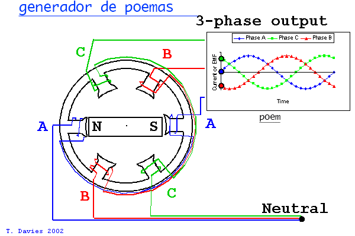

Single-Phase and Three-Phase Systems
Electrical power systems used in industrial automation are broadly classified into single-phase and three-phase systems. These systems differ in their method of power generation, transmission, and application. Understanding the characteristics and practical usage of single-phase and three-phase power is essential for automation engineers, as it directly influences equipment selection, power distribution design, energy efficiency, and system reliability.
Single-Phase Systems
A single-phase system consists of a single alternating voltage waveform supplied through two conductors—one phase conductor and one neutral. The voltage alternates sinusoidally with time, supplying power to electrical loads in a simple and economical manner. Single-phase power is commonly used where power demand is relatively low.

Characteristics:
- Two wires: Phase (Live) and Neutral
- Voltage varies sinusoidally with time
- Power delivery is not constant (pulsating)
Typical Voltage:
- 230 V (common in many countries)
Key features of single-phase systems include:
- Simple circuit configuration.
- Lower installation and maintenance cost.
- Suitable for light and moderate electrical loads.
- Commonly available in residential and small commercial areas.
In automation and industrial environments, single-phase power is typically used for:
- Lighting systems.
- Control panels and auxiliary equipment.
- Small motors and office equipment.
- Instrumentation and monitoring devices.
However, single-phase systems produce pulsating power, which makes them less suitable for heavy industrial motors and high-power automation applications.

Three-Phase Systems
A three-phase system consists of three alternating voltage waveforms of equal magnitude and frequency, each phase separated by 120 electrical degrees. This arrangement ensures continuous and uniform power delivery, making three-phase systems ideal for industrial and automation applications.

Characteristics:
- Three (or four) wires: Three phases + Neutral
- Delivers constant power
- Higher power capacity
Typical Voltage:
- 400-415 V (line voltage)
Three-phase power is extensively used in industrial automation for:
- Induction and synchronous motors.
- Variable Frequency Drives (VFDs).
- Pumps, compressors, conveyors, and machine tools.
- Main power distribution in factories.
Three-phase motors are more efficient, have higher starting torque, and require less maintenance compared to single-phase motors.

Types of Three-Phase Connections
Three-phase systems can be connected in different configurations depending on voltage and application requirements.
- Star (Y) Connection:
- Lower phase voltage.
- Used where insulation requirements must be reduced.
- Common in power distribution systems.
- Delta (Δ) Connection::
- Higher phase voltage.
- Used in high-power motor applications.
- Provides higher torque.
Selection of the appropriate connection improves performance and ensures safe operation of equipment.